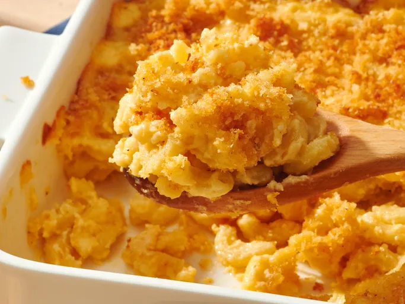

Tini's Viral Mac and Cheese
Home

Description:
This viral Tini’s Mac and Cheese took over TikTok, and after trying it myself, I can confirm the hype is real — this might honestly be the best mac and cheese I've ever made. It’s insanely creamy, loaded with layers of melted cheese, and baked until the top develops a golden, bubbly crust that’s addictive. It tastes exactly as the videos promise: cheesy, rich, decadent, and absolutely perfect for holidays, potlucks, or anytime you want comfort food that goes above and beyond the usual mac n cheese.
Ingrdients:
- 1 lb. cavatappi pasta, cooked
- 16 ounces of mozzarella cheese, grated
- 16 ounces of Colby jack cheese, grated
- 8 ounces of cheddar cheese, grated
- 1 teaspoon of garlic powder
- 1 teaspoon of smoked paprika
- 1/2 teaspoon of salt
- 1/2 teaspoon of pepper
- 3 Tablespoons of butter
- 3 Tablespoons of flour
- 1 can Carnation Evaporated Milk
- 2 cups heavy cream
- 1 Tablespoon Dijon mustard
Steps:
- Preheat oven to 350 degrees Fahrenheit. Grease a 9 x 13 inch baking dish
- Cook cavatappi according to package instructions. Drain and set aside.
- Combine all 3 shredded cheeses in a bowl and divide half into another bowl. Set aside
- Combine garlic powder, smoked paprika, salt, and pepper in a small bowl. Divide in half and set aside.
- Melt butter in a large skillet over medium heat. Once melted, add half of the season mixture and flour. Stir until the mixture becomes paste-like, about 3-5 minutes. Add evaporated milk and whisk until thick. Add heavy cream and the rest of the seasoning mixture and mix until combined. Whisk in Dijon mustard until thick. Slowly add in half the cheese, allowing it to melt before adding more.
- Stir in cavatappi until coated with cheese sauce.
- dd a layer of cavatappi and then a layer of shredded cheese to prepared baking dish. Repeat layers
- Bake in preheated oven until cheese is melted and bubbly, about 25-30 min.
- Finish by broiling until top is golden brown, about 2 min.